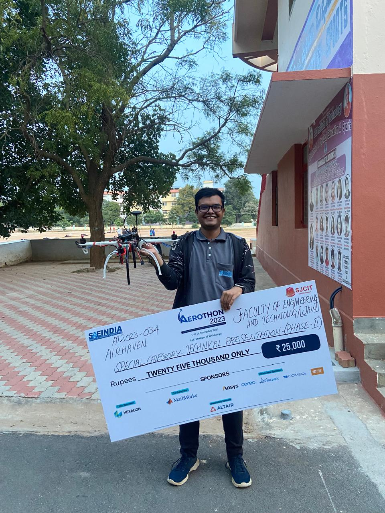
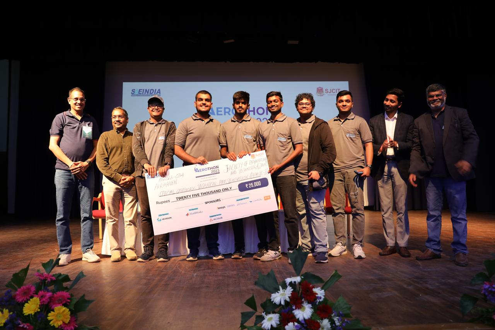
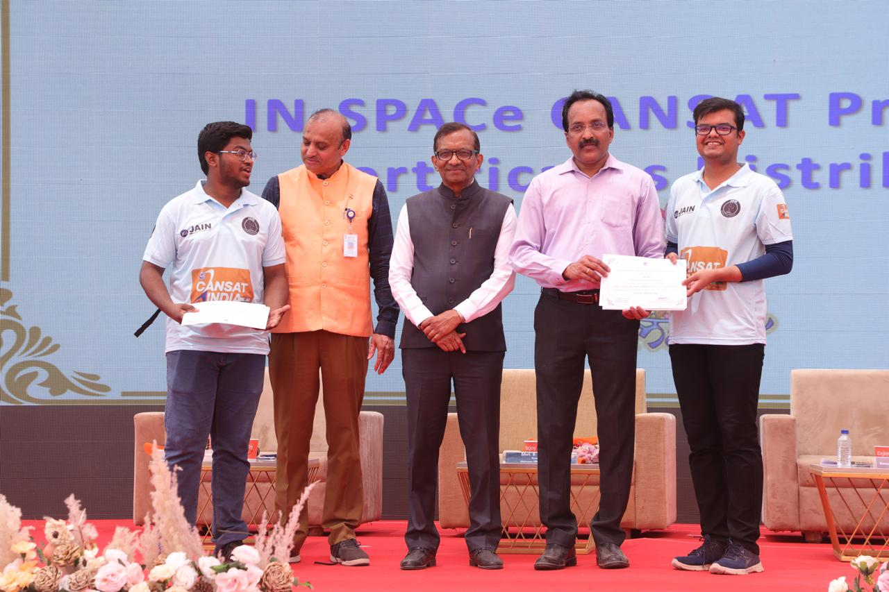
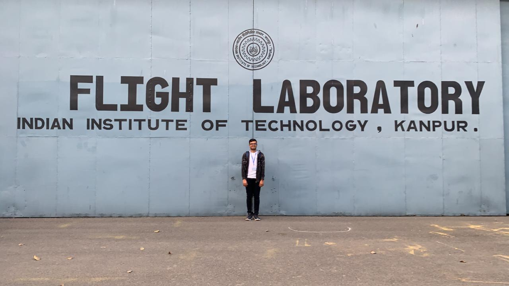

My Background
I'm Sourav, a recent graduate in Aerospace Engineering, now a graduate student at the University of Tokyo.
My journey began with Team Aeros during IPAS 2021, where we secured fourth place.
I later co-founded Team Avadhi and joined SAEIndia Aerothon as Team Airhaven, winning a technical presentation award.
I also worked with Team Ardra for the IN-SPACe National CANSAT Competition, and collaborated with DSI and SGAC. I have presented at conferences like the 75th IAC (Milan) and IAES-2024 at ISRO.
   My bachelor's thesis was under Dr. Geethaikrishnan C and Mr. Gnani Ankathi at ISRO's Human Space Flight Center. I've joined the Intelligent Space Systems Laboratory at the University of Tokyo from Spring 2025. My current research focuses on Space Debris Tracking, Propagation and Uncertainty Prediction, and Trajectory Design.
Major Courses & Certifications
- Automatic Control - NPTEL
- Rocket Propulsion - NPTEL
- Space Flight Mechanics - NPTEL
- Launch Vehicle Design - NPTEL
- Computational Science - NPTEL
- Robotics Manipulators - NPTEL
- Systems Engineering - Coursera
- Aerospace Materials - Coursera
- Programming with MATLAB - Coursera
- Kinematics & Kinetics - Coursera
- Vibration of Elastic Systems
- Aerodynamics
- Flight Mechanics
- Aerospace Structures
- Aerospace Propulsion
- Flight Lab - IIT Kanpur
- Rocket Systems - IISc Bengaluru